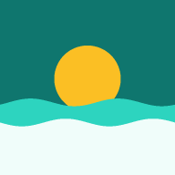

Gijón hoy
Hoy
Mapa
Agenda
Agua
Sin conexión: se muestran los últimos datos guardados.
Avisos de movilidad
gijon.es
Próximamente
Ver agenda
Calidad del agua
Ver detalle
Aire por estaciones
Playas
Ver en el mapa
Capas
Agenda